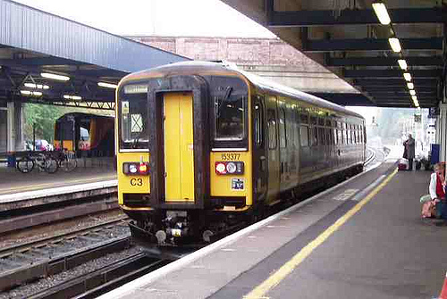

Photo by Bright MeadowI’m painfully aware of the UK’s rail system, travelling around 5,000 miles a month by train at the moment. These hours sat in trains and stations have included pretty much every sort of event, fault and engineering issue that might reasonably be expected. Thankfully I don’t have to pay for this travel as my company foots the bill, but one can’t help but be aware of the costs involved. At the start of the year most rail fares in the UK went up, with the average rise being just under 6%. Some fares rose by almost twice as much.
Running a railway network is, of course, pretty expensive. However, while this is true it’s presumably true in the rest of Europe too, and yet UK commuters pay between 3.5 and 10 times more than equivalent European journeys. It’s tempting to believe in the dismissal of this by free-marketer’s that it’s because European railways receive a lot more subsidy than the UK’s, but ticket revenue currently amounts to around £6.5 billion a year, while government pays around £4bn. This subsidy is not provided entirely to keep the trains running - a significant proportion of it goes directly into the pockets of shareholders and bosses. For example, this page showing profits and executive pay in 2008 shows a number of operating company CEOs receiving pay packets of around a million pounds. This is despite their companies having to receive billions in subsidies to operate. We have the strange situation in that these companies are effectively public (in that we pay for them through taxes), yet they cream-off some of this money in excessive pay and ‘profits’. How does this make sense? On most rail routes passengers don’t have any choice of provider, and fares and timetables dictated by regulators. What have the companies done to deserve these ‘profits’ and huge pay packets?
Rail problems in the UK are down to political free-market ideology and, whether you agree with that or not, a botched privatisation. The model for BR’s privatisation was that used in Sweden in 1988, where the state railway was split into two - a track network operator and train operating companies. This was the first time such a split had been tried, and John Major’s Conservative government followed this model in The Railways Act of 1993. It is notable that the Swedish privatisation suffered from the train operating companies repeatedly going bankrupt and was renationalised in 2001.
Thatcher herself considered the privatisation of BR a step too far, but prepared the ground for it. First the British Transport Hotels were sold off in 1982 and, Sealink was sold in 1984. These were both profitable assets for the state, but the hotels were sold off cheaply to private owners, and the old Sealink routes are now making those profits for Swedish company Stena Line. British Rail’s engineering division, which under BR made trains and equipment within the UK and for export, and employed thousands of workers, was sold in 1988. Privatisation of BR caused orders to effectively stop, which lead to the almost complete destruction of the train manufacturing industry in the UK, with the former BR works in Derby the only remaining site. After passing through a number of owners the remains of the old BR engineering works are now run by Canadian company Bombardier, one of the companies which took over BR’s R&D facilities after privatisation. By 1993, when the Railways Act was written to sell what remained of BR, all that was left was the rail network and trains.
So privatised UK rail is inefficient, but surely we are getting some benefits? Well, no. You may occasionally see shiny trains, but these are mostly refurbished BR equipment, in fact the average age of trains in the UK is currently no different to that under the last years of BR. Any new trains, which would previously have been built by BR in the UK by British workers are now either built for Canadian profit in the remaining ex-BR plants in Derby or Crewe, or imported. Old BR works in York and Birmingham have closed. Despite this, the privatised railways now receive more government subsidy than BR ever did. In 1994, the total government support received by BR was £2,168m in 2005 terms, while in 2005, government support from all sources totalled £4,593m, despite a lack of any increase in government investment in improving infrastructure.
The train operating companies claim that they are investing money from increased fares, but how did this compare with BR? While BR received less financial support than in most European countries from the government, it successfully completed major infrastructure upgrades such as the electrification of the West Coast, Great Eastern and East Coast main lines, the design and introduction of the InterCity 125 and InterCity 225 express trains and the total modernisation of various routes around London. In BR’s final years it could claim to run more trains at more than 100 mph than any other railway in the world. Since privatisation there has been considerable expenditure on modernising the system, but largely confined to a few routes - and many of these investment schemes were in fact initiated by British Rail rather than the private companies.
The big parties know the privatisation has failed, even the Tories - in 1996 Chris Grayling, Conservative transport spokesman, admitted that the split of the rail industry into track and train components had been a mistake. In 2004, the Labour Party Conference voted by 2 to 1 in favour of the government taking the train operating companies back into public ownership as franchises expired, but this was immediately ruled out by the then Transport Secretary Alastair Darling. The Labour leadership has refused to consider renationalisation since. The Conservatives, Labour and the Liberal Democrats all support continuation of the privatised structure, despite what (in Labour’s case) their members may wish. Only the Green Party support bringing the railway network back into public hands.
The McNulty review of the UK railway industry in 2011 found that the fragmentation of the industry in the course of privatisation had caused a permanent increase in costs of between 20% and 30%. The UK rail network has moved from being one of the best and cheapest to run under BR to one of the most expensive, and the country has lost almost all of its engineering and train manufacturing capacity. The government should not be allowing these private companies to increase fares - in these times of ‘austerity’ they should be pursuing the most efficient option available, renationalisation.